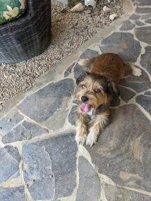
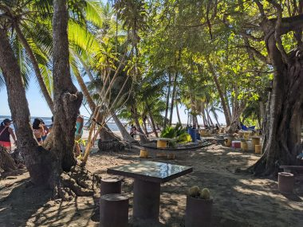

コスタリカの海辺の田舎まちでノマドワーク兼お試し移住体験
１月下旬、気温マイナス１５℃、極寒のトロントから飛行機の直行便で6時間、地上の楽園と呼ばれるコスタリカの首都サンホセの空港へ到着した。
飛行機を降りた後の入国審査は長蛇の列だった。1時間は待つものと覚悟したが、職員により首尾よく管理されていて40分ほど並んで終えた。
空港の外へ出ると午後の強烈な日差しがまぶしい。気温は２８℃、酷な暑さは感じない。
車は手配しておいたので、迎えの中から名前の書いた紙を探しだし、名前を名乗ると、腰の曲がった初老の男性が歓迎してくれて握手を求められられる。コロナ禍で一瞬躊躇したが握手する。迎えでごった返す出口付近から少し離れたところでまで行くと、別の男性がいて、すぐに車がくるからちょっとここで待て、というのでしばし立って待つことに。
そして5分後、あと5分でくるから、もうちょっと待ってて。道が混雑してるんだ、とのこと。その後同じ会話が5回くらい繰り返された。
座るところもなく、立ったまま待つこと30分して、ようやく乗用車がやってきた。案内してくれたひとにチップを要求され支払う。運転してくれた初老の男性は、英語が話せなかったが、J次郎がスペイン語話せるとわかると表情が和らぎ、甥が来られなくなってね、代わりに呼ばれたんだ。いやあ、30分くらい前に急に連絡もらったから慌ててきたんだよ、と説明してくれた。
途中屋台でフルーツを買ったりして2時間ほどでJACO（ハコ）に着き、お金をおろしたり携帯のSIMを購入したりしてから、さらに30分ほどハコから西に進み、滞在先のEsterillos Oestes（エステリロス オエステ）のエアビーに着いたときはすでに暗くなり始めていた。
観光ではなく、将来を見据えて日常を体験するためにコスタリカに来た。自炊するためにキッチンがあり、ビーチに歩いて数分、という条件で探しだしたエアビーは予想以上に狭かった。
ベッドルーム兼キッチンの部屋は６帖くらいの広さしかない。それにシャワーとトイレという間取りで、朝目覚めてダブルベッドに横たわったまま腕を伸ばすと、眼鏡を置いた、流し台のあるキッチンカウンターに手が届くほど狭い。
食事や書き物などをするリビング＆ダイニングエリアは外のパティオ。設置されていたポータブルエアコンの効きがいまいちよくないのと、耳栓をしても聞こえるほどうるさいので、３度の食事はもちろん、その他の時間も否応なしに外のパティオで過ごすことになった。
そして、パティオではこれでもか、と蚊にさされまくった。このあたりは海沿いで湿度は８０％を越える高さで、蚊が多かった。近所に品揃えの良いスーパーがあったので蚊対策の製品は買うことができたのは幸いだった。
不便な思いをしながらも、12日間もこの家に滞在した。
12日間予約してしまっていてキャンセルするのはなんだか気が引けたし、他に移れる宿がないほど小さい町だったし、ここで過ごすのどかな田舎の生活が気に入ったのだ。
海に続く家の前の砂利道を行き交うのは、イグアナやにわとり、時々放し飼いにされている馬といった動物。イグアナといえば、水を飲みに着地しようとした鳥を素早く捕らえ、その頭をばりばりと食べたのを目撃したことがあった。草食動物だと思っていたイグアナの狂暴性を目の当たりにし、それはそれは驚いた。
泥棒対策にどこの家でも犬を複数飼っているが、犬もでたければ自由に外と中を行き交っていてのびのびしている。夜は地元の人々が家の前のパティオでくつろぎ、子供は外で走り回る。生活感漂うこの町は、なんだか遠い昭和の記憶を呼び起こす。
↓隣の家の犬。

この犬、人懐こくて、門を閉めても鉄格子の間から入ってきてしまう。世渡り上手らしく、懐に入ってくるのが上手い。この家で飼われている2匹の大型犬が裏庭で繋がれているのをいいことに、わが物顔でずっと入り浸ってくつろいでいた。可愛い。この家を発つときにもやってきて、見送ってくれた。お別れを言うのが辛かった。
週末には夕陽を目当てにツアーバスが到着するほど夕陽が美しくみえるここのビーチは、岩が多く、波が高いのでサーフィンには向いているが、海水浴にはあまり向いていない。それゆえに、まだあまり開発されずに手つかずの自然が多く残っているので景観がよい。
どこまでも続く海岸線は緑で覆われており、人工的な建物は見えない。尾の長い真っ赤な極彩色の鳥がギャーギャーと騒ぐ声が聞こえてきて空を見上げると、向こうから群れをなしたペリカンが悠々と飛んできて、頭上を越えていく。
ビーチにはハンモックがしつらえた公園があり、地元の人々の憩いの場となっていた。J次郎は昼間はPC持参でここで過ごした。ヤシの木の木陰でハンモックにゆられ心地いいい海風を感じながら午後にうたたねするのは至福のときだった。

何もすることがない田舎のビーチタウンで、何もしない贅沢を堪能した。
カナダではストレスからくる慢性的な不調に悩まされていたJ次郎は心も体も癒されていった。
↓続き↓